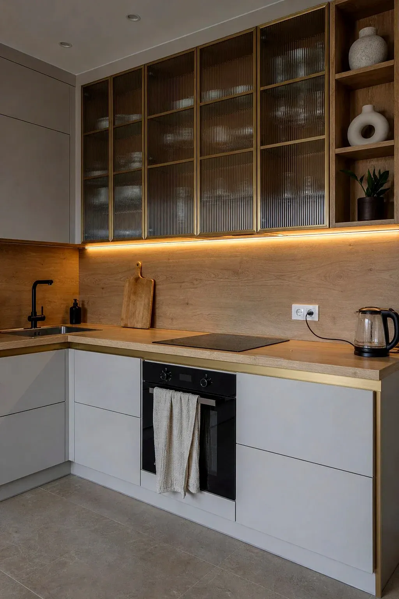
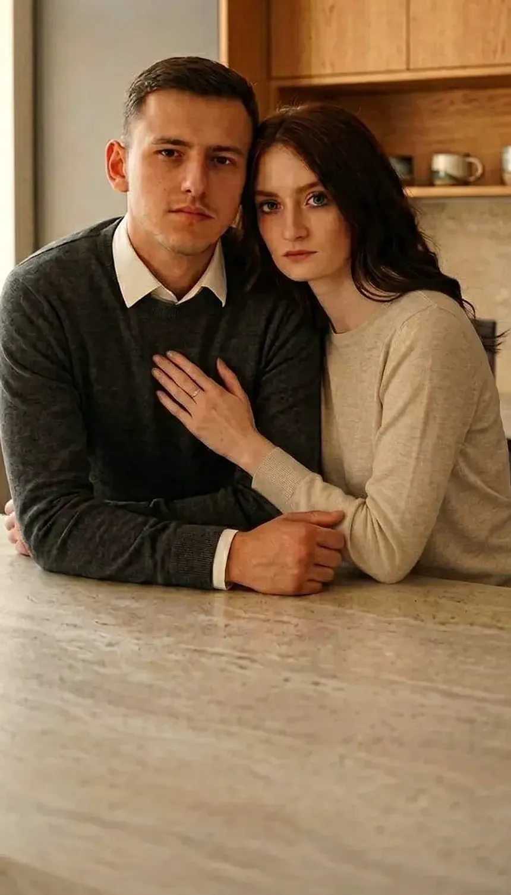
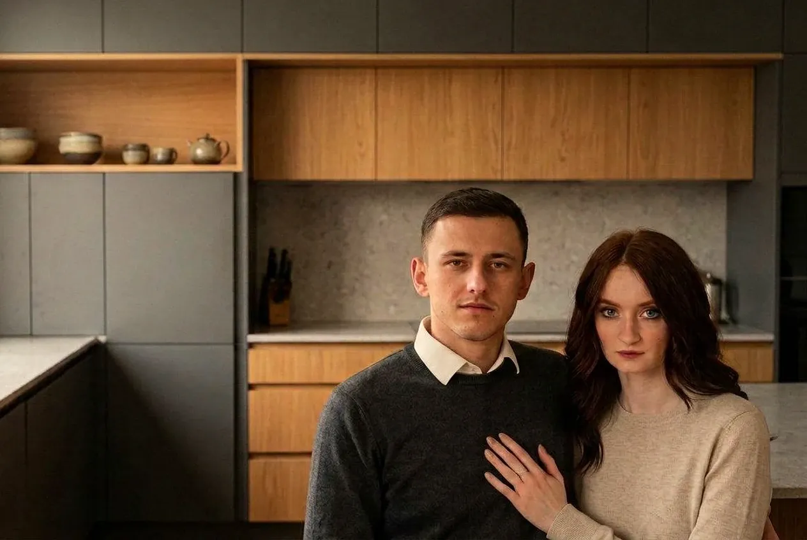
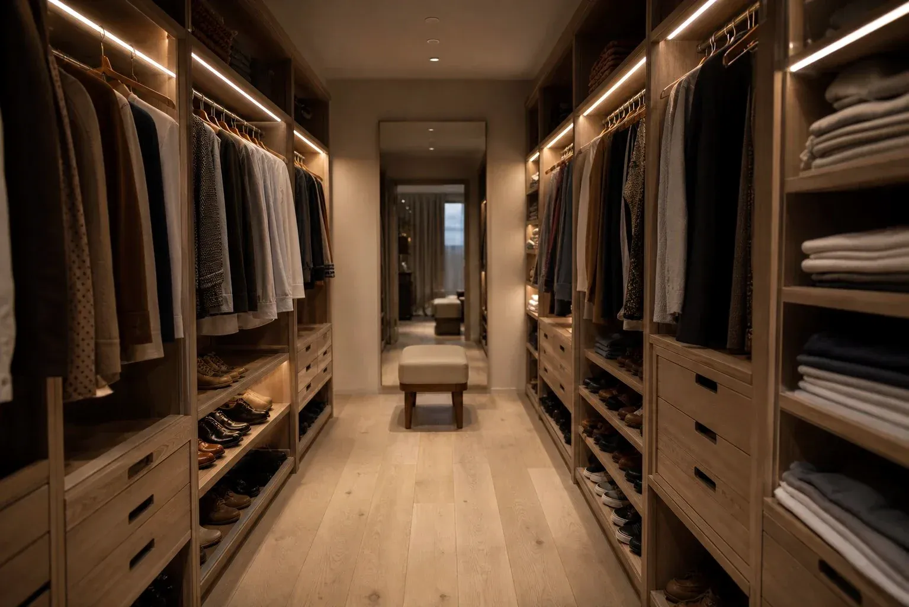
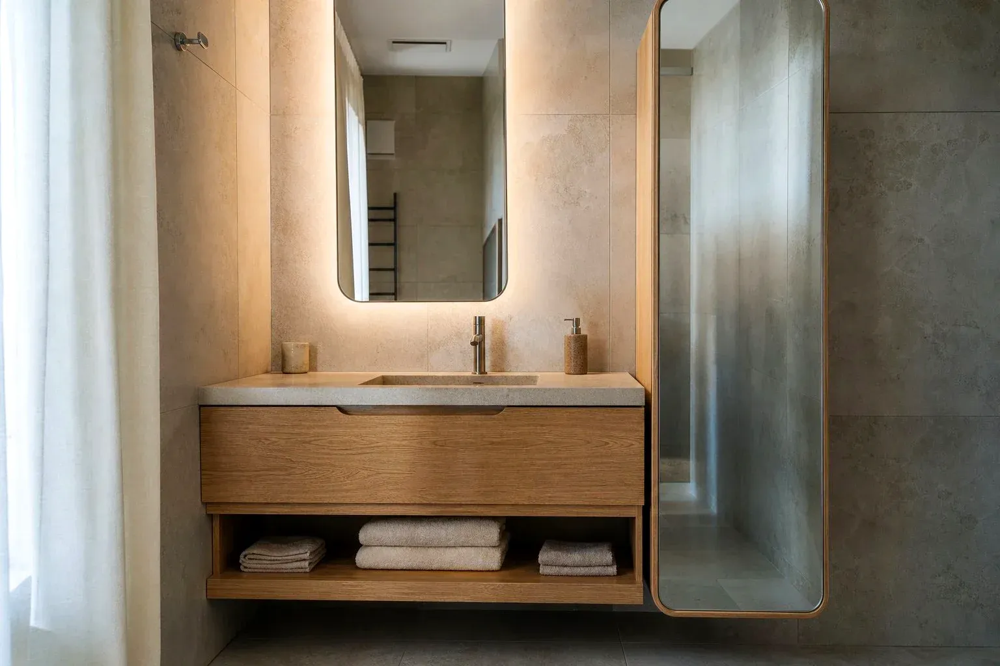
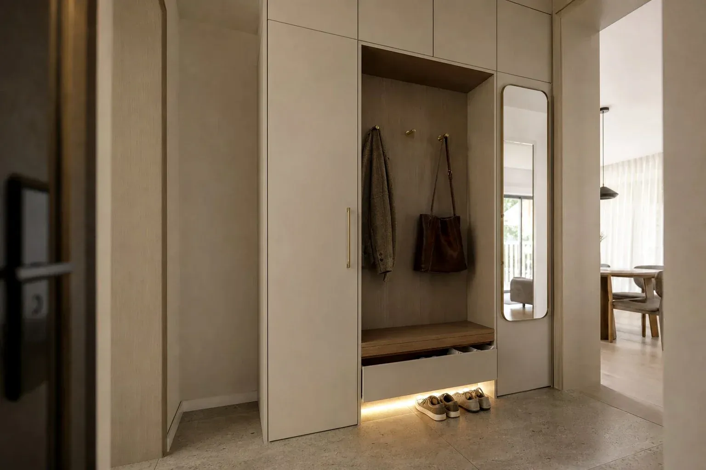
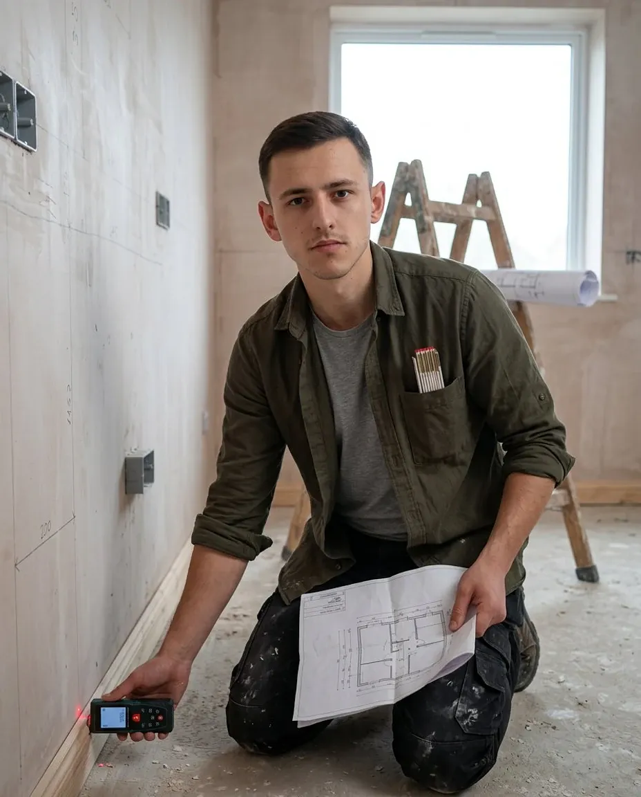
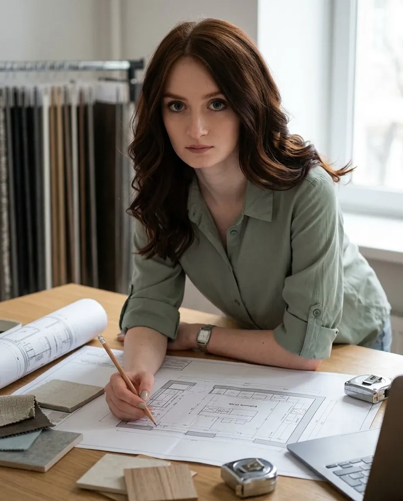

Кухни
Основное направление. От компактных кухонь в хрущёвке до кухонь-гостиных с островом.
- Любая компоновка и нестандартные размеры
- Встраиваемая техника и подсветка
- Схема электрики для вашего мастера
Тверь · занимаемся кухнями с 2009 года
Роберт и Катя ведут проект сами — от первого замера до момента, когда вы впервые готовите на новой кухне. Проектирование, визуализация и схемы электрики — бесплатно.
Без обязательств. Сначала обсудим задачу и поймём, что вам
действительно нужно.
Или просто позвоните:
+7 (910) 537-89-91

Это мы — Роберт и Екатерина Познакомиться →
01 · Что мы делаем
Чаще всего к нам приходят за кухней, а уезжаем мы с объекта, сделав ещё гардеробную и шкаф в прихожей. В одной стилистике и с одной ответственностью.

Основное направление. От компактных кухонь в хрущёвке до кухонь-гостиных с островом.

Системы хранения по вашим размерам: гардеробные, шкафы-купе, распашные шкафы, антресоли.

Тумбы, пеналы и зеркальные шкафы во влагостойком исполнении, подогнанные по месту.

Корпусная мебель для остальных комнат — в одной стилистике с кухней.
02 · Кто это делает
Здесь нет отдела продаж и менеджера, который уволится через месяц: есть Роберт и Катя, которые ведут проект от первого разговора до сборки и остаются на связи после.

«На замер приеду я сам»

«Проект нарисую я. И перерисую, если не понравится»
03 · Проекты
От компактной кухни в углу до кухни-гостиной с островом. Найдите задачу, похожую на вашу, — и посмотрите, как она решена.
Пришлите планировку или просто фото помещения — скажем, что реально сделать в ваших размерах и сколько это будет стоить. Расчёт бесплатный.
04 · Детали
Профиль-ручка вместо накладной, кромка столешницы, стык фактур, свет под корпусом, рифлёное стекло вместо прозрачного. Это нельзя купить готовым — это проектируется под конкретную кухню.
Материалы
Не «качественные материалы от проверенных поставщиков», а список, который можно проверить и сравнить с тем, что предлагают в другом месте.
05 · Как проходит работа
Десять шагов от первого разговора до гарантии. Первые пять — те, что предстоят вам в ближайшее время.
Звонок, сообщение или заявка. Достаточно пары фраз: где кухня, что не устраивает сейчас, чего хочется. Проекта и точных размеров на этом этапе не нужно.
Приезжаем на объект, снимаем размеры, смотрим окна, двери, короба, вентиляцию и выводы коммуникаций. Если ремонт ещё не закончен — это даже лучше.
Кто и как часто готовит, где стоит чайник, нужен ли обеденный стол, куда девать крупы и сушилку. Хорошая кухня начинается с привычек, а не с фасадов.
Планировка, эргономика, наполнение, материалы, визуализация. Вы видите свою кухню целиком до того, как что-то оплачено. Проектирование бесплатное.
Меняем цвет, ручки, раскладку, высоты. Делаем несколько вариантов и сравниваем. Мы не считаем правки и не торопим.
Сверяем габариты техники, зазоры, углы открывания, вентиляцию и стыки. Делаем схему электрики и передаём её вашему мастеру. Это бесплатно.
После вашего согласования размещаем заказ на производстве и ведём его сами: контролируем размеры, цвет и комплектацию. Оплата 50 / 50 — половина на старте, половина по факту.
Доставка по Твери — наша. Согласуем день так, чтобы это было удобно вам и вашему ремонту.
Собираем сами, подключаем технику совместно с вашими мастерами, подгоняем фасады и убираем за собой.
Гарантия 24 месяца. Что-то подкрутить, заменить, добавить полку через год — пишите. Мы не пропадаем после подписания акта.
06 · Стоимость
Две кухни одинаковой длины могут отличаться по цене в несколько раз — из-за материалов, фурнитуры и сложности. Любая «цена от» на сайте либо занижена, чтобы вы позвонили, либо ничего не значит.
Прямая, угловая, П-образная, с островом. Количество и тип секций влияют сильнее, чем общий метраж.
Плёнка, эмаль, шпон, массив, рифлёные и стеклянные фасады — разница в стоимости здесь самая заметная.
ЛДСП, компакт-плита, искусственный или натуральный камень. Плюс обработка кромки и вырезы.
Направляющие, доводчики, подъёмники, внутреннее наполнение, сушилки, органайзеры, подсветка.
Радиусы, интегрированные ручки и профили, нестандартные глубины, подгонка под кривые стены.
Технику можно купить самим или через нас — на стоимость мебели это влияет только в части подготовки ниш.
07 · Расчёт
Это не калькулятор с придуманной ценой: таких цен не бывает. Это бриф. Вы отвечаете на пять коротких вопросов, Роберт считает смету по вашему помещению и объясняет, из чего она сложилась.
Готово
Мы получили ваши ответы. Роберт или Катя свяжутся с вами и
скажут, что реально сделать в ваших размерах.
Если не терпится — звоните
+7 (910) 537-89-91.
34 отзыва и 44 оценки в карточке организации. Мы не можем ни отредактировать их, ни удалить — поэтому им и стоит верить больше, чем тексту на сайте.
Кривые стены и газовый котёл посередине
«Кухня нужна была в съемную квартиру, поэтому хотелось сделать красиво, качественно и без космического бюджета. При этом исходник был непростой: кривые стены от застройщика и газовый котел в выемке посередине стены… На замер ребята приехали подготовленные и сразу начали предлагать разные варианты. Мне очень понравилось, что это был не формат «говорите, что хотите», а именно профессиональный подход… Всё сделано очень аккуратно: ровные зазоры, ничего не перекошено, каждая деталь на своем месте.»
Показали варианты, пока не выбрали свой
«Нам понравилось, что ребята всегда на связи, очень внимательны к деталям и нашим желаниям по дизайну и наполнению кухни, советуют что и как лучше сделать по своему опыту. Хочется отметить, что нам было сложно определиться с местоположением техники и Екатерина отправила нам разные варианты, визуально мы сразу увидели, какой вариант нам ближе. Кухню установили и она идеально вписалась в интерьер, получилось именно то, что мы хотели!»
Меняли проект, пока не нашли решение
«Выбирать кухню было очень приятно — мне не навязывали лишнее, а подобрали идеальный вариант с учётом моих пожеланий и размеров помещения, вместе со мной выбирали цвета, материалы и меняли проект до тех пор, пока не нашли идеальное решение. Была учтена не только эстетика, но и функциональность: продуманная система хранения, вместительные ящики, качественная фурнитура… Доставка была вовремя, собрали быстро, аккуратно.»
Долго выбирали, пришли по рекомендации
«Очень долго ходили смотрели кухни где можно сделать заказ, через знакомых обратились к Екатерине и Роберту, чем была очень удивлена оперативным началом их работы. Все обсудили, все проговорили, видно что ребята профессионалы своего дела… Ребята огромная благодарность Вам за качество и честность, за подход четкий к каждому шкафчику, за понимание и терпению!»
Всё в указанные сроки
«Хочу от себя выразить благодарность Екатерине и ее дружной команде Tver-kuhni. Ребята полностью оправдали доверие. Проект, изготовление, доставка — всё было сделано в указанные сроки! Учли и подсказали как все грамотно разместить в рабочей зоне. Моя маленькая и очень уютная кухня меня очень радует.»
Проект вёл Роберт и Екатерина лично
«Роберт и Екатерина очень ответственные, внимательные, дотошные до каждой мелочи, советовали как и что лучше, проработали вопрос с подбором всей техники на кухню, неоднократно самостоятельно выезжали на объект с целью контроля во время установки кухни, в результате получилась кухня моей мечты. Изготовили, установили всё под ключ без замечаний.»
Цитаты приведены дословно, сокращения отмечены многоточием.
09 · Честно о сомнениях
Кухня — дорогая и долгая покупка. Сомневаться перед ней логично. Вот что обычно беспокоит людей больше всего.
Это нормально и случается почти со всеми. Мы делаем несколько вариантов проекта в разных решениях, показываем образцы материалов вживую и сравниваем. Решение обычно приходит, когда видишь свою кухню, а не абстрактный каталог.
Тогда мы поговорим с прорабом сами. Коммуникацию и техническую координацию с вашими мастерами — электриком, сантехником, плиточником — мы берём на себя. Вам не нужно пересказывать чужие аргументы.
Ошибиться может любой. Разница в том, что мы свои ошибки исправляем — за свой счёт и без обсуждения, чья это вина. Именно поэтому вы разговариваете напрямую с владельцами, а не с менеджером.
Гарантия — 24 месяца. И телефон, по которому вы с нами общались, продолжает работать после сборки. Подтянуть, отрегулировать, заменить — обычная часть нашей работы.
Для этого и существует этап проектирования. Вам не нужно приходить с готовым решением: достаточно рассказать, как вы живёте и готовите. Остальное — наша работа. Проект бесплатный, так что разобраться можно без вложений.
Как раз в маленьких помещениях проектирование решает больше всего. Половина наших работ — компактные кухни, где мы вытаскиваем дополнительное хранение из высоты, углов и нестандартных глубин.
10 · Вопросы
Если вашего вопроса здесь нет — просто спросите. Мы отвечаем и тем, кто пока только выбирает.
Стоимость зависит от конфигурации, материалов фасадов, столешницы, фурнитуры и сложности решений. Мы не публикуем «цену от», потому что она ничего не говорит о вашем случае. После замера и проекта вы получаете конкретный расчёт с расшифровкой. Расчёт бесплатный.
Роберт или Катя свяжутся с вами удобным способом, зададут несколько вопросов о помещении и задаче и предложат, с чего лучше начать: с замера, с обсуждения планировки или просто с разговора. Никаких обязательств на этом этапе нет.
Лучше всего — до электрики и отделки. Тогда мы успеваем передать вашему электрику схему выводов, и розетки окажутся там, где нужно. Но приходить можно на любом этапе, включая законченный ремонт — просто вариантов будет чуть меньше.
Собственного цеха мы не держим. Мы проектируем кухню, подбираем материалы и фурнитуру, размещаем заказ на производстве и дальше ведём его сами: контролируем изготовление, принимаем, привозим и собираем. Отвечаем за результат при этом мы, а не завод — все вопросы и гарантия остаются на нас.
Оплата 50 / 50: половина при запуске в производство, половина — по факту. Полную предоплату мы не берём.
Срок зависит от материалов, загрузки производства и сложности проекта. Мы называем конкретный срок при согласовании — и фиксируем его в договоре, а не на словах.
Доставка и сборка — в Твери. Если ваш объект в области или рядом, напишите: обсудим отдельно, это решаемо.
Да. Мы находимся в Твери на проспекте Калинина, 13А — здесь можно посмотреть образцы фасадов, столешниц и фурнитуры. Цвет при вашем освещении и на экране — разные вещи, поэтому мы всегда советуем один раз потрогать.
Начнём
Замер и проект — бесплатно, дальше решаете вы. Ни предоплаты, ни «скидки только сегодня».
Оставьте контакт — перезвоним и договоримся о времени.
Готово
Роберт или Катя свяжутся с вами, чтобы согласовать время замера.